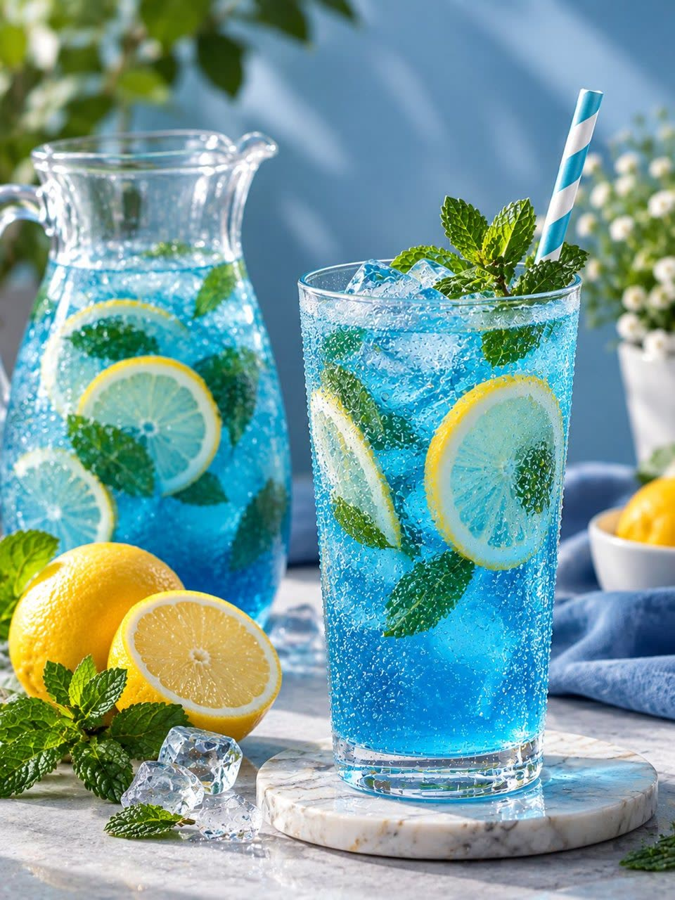

Chilled beer bottle + glass ad
PRP-020Prop stylingunspecifiedby Zarlish (@Zarlish_Shahid)2026-09-19

Photoreal premium beer ad — chilled golden bottle and glass, condensation and ice.
Prompt
Cool, refreshing, and made for a beautiful moment 💙🧊 Prompt! Create a photorealistic premium beer advertisement, a chilled golden beer bottle and elegant glass filled with sparkling golden beer, realistic condensation droplets, soft foam, dramatic studio lighting, dark luxurious background, warm golden highlights, subtle mist, premium commercial photography, ultra-detailed, realistic reflections, shallow depth of field, sophisticated composition, 4K, vertical 3:4, no people, no text, no logo.
Tags: beverage, condensation